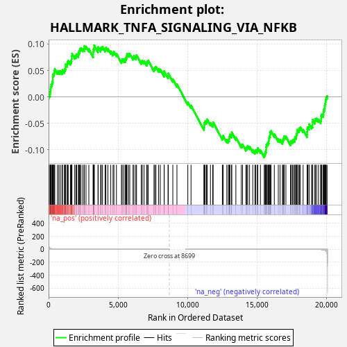
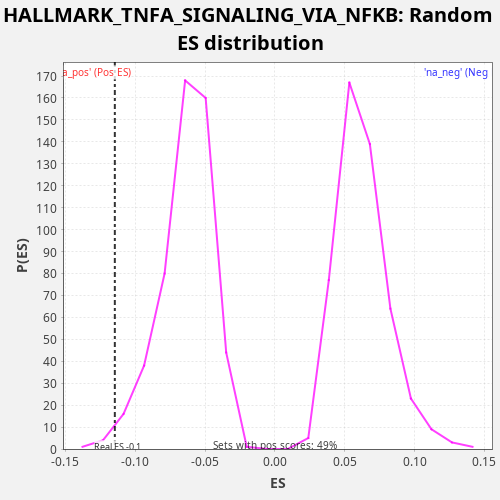

| Dataset | rnk |
| Phenotype | NoPhenotypeAvailable |
| Upregulated in class | na_neg |
| GeneSet | HALLMARK_TNFA_SIGNALING_VIA_NFKB |
| Enrichment Score (ES) | -0.114614256 |
| Normalized Enrichment Score (NES) | -1.8044454 |
| Nominal p-value | 0.01171875 |
| FDR q-value | 0.036529787 |
| FWER p-Value | 0.32 |

| SYMBOL | RANK IN GENE LIST | RANK METRIC SCORE | RUNNING ES | CORE ENRICHMENT | |
|---|---|---|---|---|---|
| 1 | CCL5 | 28 | 38.657 | 0.0039 | No |
| 2 | BCL6 | 108 | 13.512 | 0.0053 | No |
| 3 | IL6 | 115 | 12.852 | 0.0103 | No |
| 4 | NINJ1 | 142 | 11.446 | 0.0143 | No |
| 5 | TAP1 | 159 | 10.627 | 0.0188 | No |
| 6 | PLPP3 | 186 | 9.397 | 0.0228 | No |
| 7 | IFIH1 | 247 | 6.445 | 0.0251 | No |
| 8 | DRAM1 | 272 | 5.880 | 0.0292 | No |
| 9 | OLR1 | 305 | 5.334 | 0.0330 | No |
| 10 | SQSTM1 | 307 | 5.281 | 0.0382 | No |
| 11 | ICOSLG | 321 | 5.047 | 0.0429 | No |
| 12 | PTGER4 | 391 | 4.062 | 0.0447 | No |
| 13 | B4GALT5 | 406 | 3.850 | 0.0494 | No |
| 14 | IL6ST | 446 | 3.375 | 0.0527 | No |
| 15 | CEBPB | 641 | 2.016 | 0.0483 | No |
| 16 | LDLR | 740 | 1.605 | 0.0487 | No |
| 17 | BHLHE40 | 844 | 1.303 | 0.0488 | No |
| 18 | IL15RA | 967 | 1.050 | 0.0480 | No |
| 19 | SLC2A6 | 1003 | 0.994 | 0.0516 | No |
| 20 | NFE2L2 | 1138 | 0.813 | 0.0502 | No |
| 21 | TNIP2 | 1181 | 0.761 | 0.0534 | No |
| 22 | NFKBIE | 1222 | 0.715 | 0.0567 | No |
| 23 | TUBB2A | 1226 | 0.708 | 0.0619 | No |
| 24 | IFIT2 | 1333 | 0.598 | 0.0619 | No |
| 25 | NFIL3 | 1359 | 0.581 | 0.0659 | No |
| 26 | CCNL1 | 1415 | 0.525 | 0.0685 | No |
| 27 | GCH1 | 1569 | 0.434 | 0.0661 | No |
| 28 | KLF9 | 1622 | 0.407 | 0.0688 | No |
| 29 | BTG2 | 1656 | 0.390 | 0.0725 | No |
| 30 | CCRL2 | 1674 | 0.382 | 0.0769 | No |
| 31 | TNFAIP2 | 1682 | 0.379 | 0.0819 | No |
| 32 | RIPK2 | 1881 | 0.306 | 0.0773 | No |
| 33 | B4GALT1 | 1971 | 0.281 | 0.0781 | No |
| 34 | EDN1 | 2019 | 0.266 | 0.0811 | No |
| 35 | NAMPT | 2148 | 0.234 | 0.0800 | No |
| 36 | ABCA1 | 2163 | 0.231 | 0.0846 | No |
| 37 | PPP1R15A | 2222 | 0.221 | 0.0870 | No |
| 38 | GADD45B | 2254 | 0.215 | 0.0908 | No |
| 39 | IER5 | 2330 | 0.202 | 0.0923 | No |
| 40 | SIK1 | 2457 | 0.177 | 0.0913 | No |
| 41 | NFKB2 | 2560 | 0.162 | 0.0915 | No |
| 42 | ICAM1 | 2575 | 0.160 | 0.0961 | No |
| 43 | HES1 | 2695 | 0.146 | 0.0954 | No |
| 44 | CXCL10 | 2900 | 0.122 | 0.0905 | No |
| 45 | EHD1 | 3213 | 0.094 | 0.0802 | No |
| 46 | CFLAR | 3216 | 0.093 | 0.0854 | No |
| 47 | CSF1 | 3222 | 0.093 | 0.0905 | No |
| 48 | TANK | 3286 | 0.088 | 0.0926 | No |
| 49 | DENND5A | 3288 | 0.088 | 0.0979 | No |
| 50 | SLC2A3 | 3563 | 0.071 | 0.0894 | No |
| 51 | TNFRSF9 | 3571 | 0.070 | 0.0944 | No |
| 52 | RELA | 3745 | 0.061 | 0.0910 | No |
| 53 | NR4A3 | 3794 | 0.059 | 0.0939 | No |
| 54 | CXCL11 | 3884 | 0.054 | 0.0948 | No |
| 55 | SPSB1 | 4068 | 0.047 | 0.0909 | No |
| 56 | MAP3K8 | 4130 | 0.046 | 0.0932 | No |
| 57 | VEGFA | 4273 | 0.040 | 0.0913 | No |
| 58 | PNRC1 | 4479 | 0.034 | 0.0864 | No |
| 59 | YRDC | 4645 | 0.030 | 0.0834 | No |
| 60 | IRF1 | 4707 | 0.028 | 0.0857 | No |
| 61 | KDM6B | 4887 | 0.024 | 0.0820 | No |
| 62 | CEBPD | 5251 | 0.018 | 0.0691 | No |
| 63 | TRIP10 | 5305 | 0.017 | 0.0717 | No |
| 64 | MXD1 | 5423 | 0.015 | 0.0712 | No |
| 65 | PHLDA2 | 5532 | 0.014 | 0.0711 | No |
| 66 | NFKBIA | 5578 | 0.013 | 0.0741 | No |
| 67 | PLK2 | 5625 | 0.013 | 0.0771 | No |
| 68 | SERPINE1 | 5644 | 0.012 | 0.0815 | No |
| 69 | MARCKS | 5756 | 0.011 | 0.0813 | No |
| 70 | ACKR3 | 5849 | 0.010 | 0.0820 | No |
| 71 | DNAJB4 | 6084 | 0.008 | 0.0755 | No |
| 72 | RHOB | 6151 | 0.008 | 0.0775 | No |
| 73 | MYC | 6286 | 0.007 | 0.0761 | No |
| 74 | MAP2K3 | 6335 | 0.006 | 0.0790 | No |
| 75 | NFAT5 | 6679 | 0.004 | 0.0671 | No |
| 76 | PTPRE | 6749 | 0.004 | 0.0690 | No |
| 77 | ATP2B1 | 6879 | 0.003 | 0.0678 | No |
| 78 | PTX3 | 7063 | 0.003 | 0.0639 | No |
| 79 | MCL1 | 7104 | 0.002 | 0.0673 | No |
| 80 | IL7R | 7180 | 0.002 | 0.0688 | No |
| 81 | SERPINB8 | 7595 | 0.001 | 0.0533 | No |
| 82 | TRAF1 | 7650 | 0.001 | 0.0559 | No |
| 83 | PTGS2 | 7733 | 0.001 | 0.0571 | No |
| 84 | CCL2 | 7927 | 0.000 | 0.0528 | No |
| 85 | DUSP2 | 8046 | 0.000 | 0.0521 | No |
| 86 | CCND1 | 8327 | 0.000 | 0.0434 | No |
| 87 | GADD45A | 8329 | 0.000 | 0.0487 | No |
| 88 | EFNA1 | 8604 | 0.000 | 0.0402 | No |
| 89 | SGK1 | 8626 | 0.000 | 0.0445 | No |
| 90 | EGR2 | 8950 | 0.000 | 0.0336 | No |
| 91 | MSC | 9247 | 0.000 | 0.0240 | No |
| 92 | PHLDA1 | 10031 | -0.000 | -0.0100 | No |
| 93 | SLC16A6 | 10261 | -0.000 | -0.0162 | No |
| 94 | STAT5A | 11193 | -0.002 | -0.0576 | No |
| 95 | LAMB3 | 11209 | -0.002 | -0.0531 | No |
| 96 | BTG1 | 11229 | -0.002 | -0.0487 | No |
| 97 | FUT4 | 11285 | -0.002 | -0.0461 | No |
| 98 | CXCL2 | 11377 | -0.002 | -0.0454 | No |
| 99 | TNFAIP8 | 11423 | -0.002 | -0.0423 | No |
| 100 | MAFF | 11662 | -0.003 | -0.0490 | No |
| 101 | FOS | 11823 | -0.004 | -0.0517 | No |
| 102 | ATF3 | 11854 | -0.004 | -0.0479 | No |
| 103 | RELB | 12519 | -0.007 | -0.0759 | No |
| 104 | NFKB1 | 12574 | -0.008 | -0.0733 | No |
| 105 | TGIF1 | 12839 | -0.010 | -0.0812 | No |
| 106 | REL | 12948 | -0.011 | -0.0814 | No |
| 107 | TNFSF9 | 13010 | -0.011 | -0.0791 | No |
| 108 | ZFP36 | 13029 | -0.011 | -0.0747 | No |
| 109 | CD83 | 13065 | -0.012 | -0.0711 | No |
| 110 | ZBTB10 | 13183 | -0.013 | -0.0717 | No |
| 111 | PER1 | 13196 | -0.013 | -0.0670 | No |
| 112 | ZC3H12A | 13492 | -0.016 | -0.0765 | No |
| 113 | PDE4B | 13884 | -0.022 | -0.0908 | No |
| 114 | F3 | 13974 | -0.023 | -0.0899 | No |
| 115 | JAG1 | 14214 | -0.028 | -0.0966 | No |
| 116 | TLR2 | 14280 | -0.029 | -0.0946 | No |
| 117 | CXCL1 | 14349 | -0.030 | -0.0927 | No |
| 118 | CD69 | 14480 | -0.032 | -0.0939 | No |
| 119 | KLF10 | 14707 | -0.038 | -0.0999 | No |
| 120 | JUNB | 14863 | -0.041 | -0.1024 | No |
| 121 | SOCS3 | 14928 | -0.043 | -0.1003 | No |
| 122 | SDC4 | 15040 | -0.046 | -0.1005 | No |
| 123 | FJX1 | 15072 | -0.047 | -0.0968 | No |
| 124 | IL1A | 15261 | -0.053 | -0.1009 | No |
| 125 | NR4A2 | 15535 | -0.064 | -0.1093 | Yes |
| 126 | BCL3 | 15592 | -0.066 | -0.1068 | Yes |
| 127 | CSF2 | 15627 | -0.067 | -0.1032 | Yes |
| 128 | TIPARP | 15670 | -0.069 | -0.1000 | Yes |
| 129 | KLF2 | 15678 | -0.070 | -0.0950 | Yes |
| 130 | ETS2 | 15694 | -0.070 | -0.0904 | Yes |
| 131 | LITAF | 15753 | -0.073 | -0.0880 | Yes |
| 132 | RNF19B | 15814 | -0.075 | -0.0857 | Yes |
| 133 | IL1B | 15861 | -0.078 | -0.0827 | Yes |
| 134 | KYNU | 15874 | -0.078 | -0.0780 | Yes |
| 135 | TNIP1 | 15903 | -0.080 | -0.0741 | Yes |
| 136 | KLF6 | 15957 | -0.082 | -0.0714 | Yes |
| 137 | IL18 | 15962 | -0.083 | -0.0663 | Yes |
| 138 | PMEPA1 | 16028 | -0.086 | -0.0643 | Yes |
| 139 | IRS2 | 16261 | -0.100 | -0.0706 | Yes |
| 140 | IER3 | 16549 | -0.121 | -0.0797 | Yes |
| 141 | SMAD3 | 16676 | -0.133 | -0.0807 | Yes |
| 142 | TRIB1 | 16846 | -0.148 | -0.0839 | Yes |
| 143 | EIF1 | 16892 | -0.152 | -0.0808 | Yes |
| 144 | FOSL2 | 16941 | -0.157 | -0.0779 | Yes |
| 145 | CXCL3 | 16972 | -0.160 | -0.0741 | Yes |
| 146 | G0S2 | 17094 | -0.175 | -0.0749 | Yes |
| 147 | BIRC3 | 17430 | -0.226 | -0.0864 | Yes |
| 148 | CDKN1A | 17473 | -0.233 | -0.0832 | Yes |
| 149 | PDLIM5 | 17568 | -0.251 | -0.0826 | Yes |
| 150 | SPHK1 | 17637 | -0.268 | -0.0807 | Yes |
| 151 | FOSB | 17728 | -0.287 | -0.0799 | Yes |
| 152 | PANX1 | 17749 | -0.292 | -0.0755 | Yes |
| 153 | CXCL6 | 17836 | -0.310 | -0.0745 | Yes |
| 154 | IFNGR2 | 17848 | -0.313 | -0.0698 | Yes |
| 155 | FOSL1 | 17900 | -0.325 | -0.0670 | Yes |
| 156 | DUSP1 | 17906 | -0.327 | -0.0620 | Yes |
| 157 | TNFAIP3 | 18017 | -0.359 | -0.0622 | Yes |
| 158 | BMP2 | 18063 | -0.373 | -0.0591 | Yes |
| 159 | KLF4 | 18139 | -0.401 | -0.0576 | Yes |
| 160 | PFKFB3 | 18336 | -0.480 | -0.0621 | Yes |
| 161 | IL23A | 18625 | -0.633 | -0.0712 | Yes |
| 162 | AREG | 18630 | -0.635 | -0.0661 | Yes |
| 163 | RCAN1 | 18642 | -0.643 | -0.0613 | Yes |
| 164 | SNN | 18665 | -0.658 | -0.0571 | Yes |
| 165 | TSC22D1 | 18764 | -0.761 | -0.0567 | Yes |
| 166 | BCL2A1 | 18767 | -0.763 | -0.0515 | Yes |
| 167 | HBEGF | 18940 | -0.940 | -0.0548 | Yes |
| 168 | JUN | 19015 | -1.035 | -0.0532 | Yes |
| 169 | GFPT2 | 19016 | -1.035 | -0.0479 | Yes |
| 170 | LIF | 19030 | -1.059 | -0.0432 | Yes |
| 171 | DUSP4 | 19184 | -1.338 | -0.0456 | Yes |
| 172 | BIRC2 | 19210 | -1.392 | -0.0416 | Yes |
| 173 | BTG3 | 19302 | -1.635 | -0.0408 | Yes |
| 174 | SERPINB2 | 19441 | -2.209 | -0.0424 | Yes |
| 175 | CD44 | 19600 | -3.627 | -0.0450 | Yes |
| 176 | IER2 | 19632 | -4.053 | -0.0413 | Yes |
| 177 | CLCF1 | 19634 | -4.058 | -0.0360 | Yes |
| 178 | NR4A1 | 19684 | -4.673 | -0.0331 | Yes |
| 179 | SAT1 | 19789 | -6.992 | -0.0331 | Yes |
| 180 | DUSP5 | 19805 | -7.261 | -0.0285 | Yes |
| 181 | PLAUR | 19818 | -7.655 | -0.0238 | Yes |
| 182 | F2RL1 | 19882 | -11.060 | -0.0216 | Yes |
| 183 | EGR1 | 19898 | -12.435 | -0.0171 | Yes |
| 184 | GEM | 19911 | -14.489 | -0.0123 | Yes |
| 185 | TNC | 19951 | -19.393 | -0.0090 | Yes |
| 186 | INHBA | 19966 | -22.005 | -0.0044 | Yes |
| 187 | ID2 | 20002 | -29.468 | -0.0008 | Yes |
| 188 | PLAU | 20061 | -59.008 | 0.0016 | Yes |

{kind=link}
{kind=link}